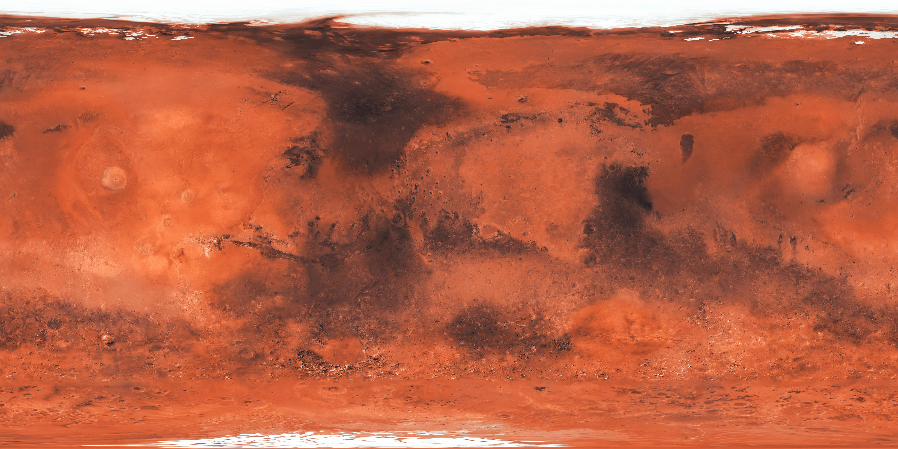

NASA APOD
Astronomy Picture of the Day
Contacting NASA...
Mission Dashboard
A live dashboard experiment pulling public data from APIs. Starting with NASA Astronomy Picture of the Day, with more modules planned.
Contacting NASA...
A 3D visualization of Mars' surface and atmospheric conditions.
Open Mars 3D Globe Dashboard →
A planned feed of space weather data from NASA's DONKI service.
Planned module for near-earth object data and close approaches.
Planned module for status messages, timestamps, and dashboard diagnostics.